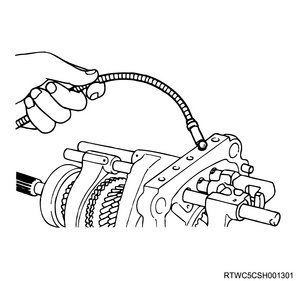
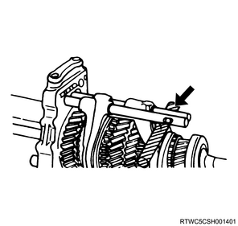
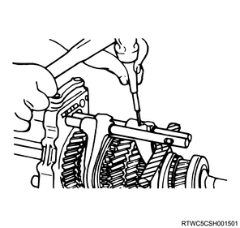
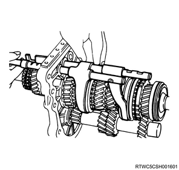

1. Remove the detent spring plate from the intermediate plate.
Note
2. Remove the detent spring from the intermediate plate.
Note
3. Remove the detent ball from the intermediate plate using the magnet.

4. Remove the spring from the inhibitor.
Note
1. Remove the spring pin from the reverse - 5th shift rod using a spring pin remover.
Note
2. Remove the reverse - 5th shift rod from the intermediate plate.
Note
Caution
1. Remove the reverse - 5th shift arm from the 5th synchronizer assembly.
Note
Note

1. Remove the spring pin from the 3rd - 4th shift rod using a spring pin remover.
Note

2. Remove the 3rd - 4th shift rod from the intermediate plate.
Note
Caution

1. Remove the 3rd - 4th shift arm from the 3rd - 4th synchronizer assembly.
Note
1. Remove the spring pin from the 1st - 2nd shift rod using a spring pin remover.
Note
2. Remove the 1st - 2nd shift rod from the intermediate plate.
Note
Caution
1. Remove the 1st - 2nd shift arm from the 1st - 2nd synchronizer assembly.
1. Remove the interlock pin from the intermediate plate.